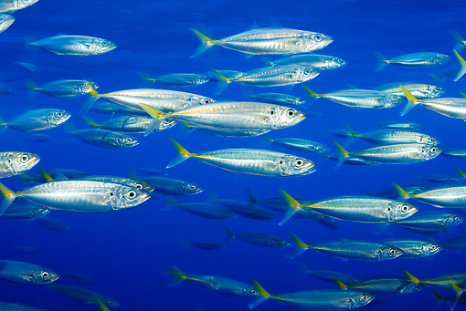

DIET
What do Dolphins eat?
Different species of Dolphins eat different animals.Some species eat fish such as cod or makerel. Other species of Dolphins eat squid or other cephalapods.Bigger Dolphins like the Orca,also known as the Killer Whale can eat small mammals. That includes,seals,sea lions and even turtles
A school of Makerel hoping no dolphins eat them.
How much do Dolphins eat every day?
The amount of food Dolphins eat depends on what fish they eat. For example,Squid don't have as much fat as makerel or herring so Dolphins need to eat more squid to get the energy they need.Typically,a dolphin that weighs 200-250 killograms will eat about 10-25 kilograms of fish everyday.
How does the Dolphin catch it's prey?
Dolphins have several methods of hunting. One method is called herding. Herding is a collaborative huntinh strategy when a pod of dolphin surround the of fish and eat from it. Another method is called corralling. Coralling is when the dolphins drive the fish to the surface of the ocean so the fish can not escape.Some other species of dolphins catch larger fish by hitting the fish with their tail which stuns them.Dolphins have great senses and can find fish using their senses and echolocation.